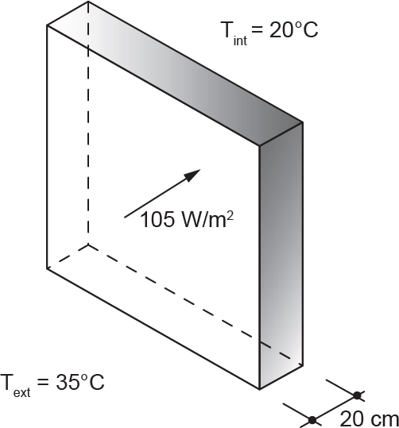
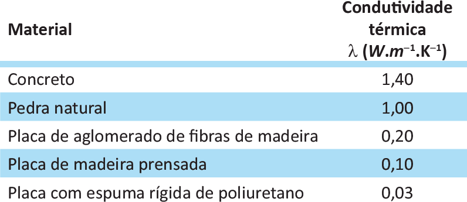

Um ambiente termicamente confortável é uma das condições que devem ser consideradas em projetos de edificações. Afim de projetar um ambiente interno com temperatura de 20°C para uma temperatura externa média de 35°C, um engenheiro considerou, no dimensionamento, um fluxo de calor através de uma parede externa de 105 W/m2, conforme ilustra a figura abaixo.
A tabela a seguir apresenta os valores da condutividade térmica para alguns materiais de construção.
ASSOCIAÇÃO BRASILEIRA DE NORMAS TÉCNICAS. NBR 15220-1: Desempenho térmico de edificações - Parte 1: Definições, símbolos e unidades. Rio de Janeiro, 2005, p. 8 (adaptado).